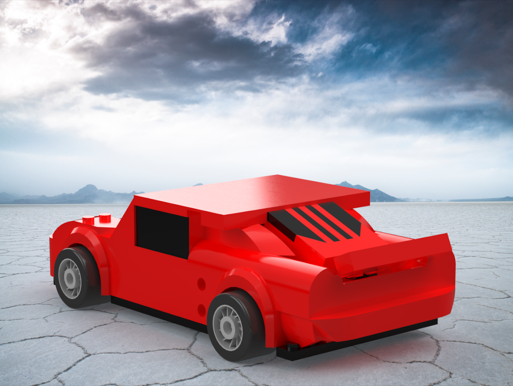
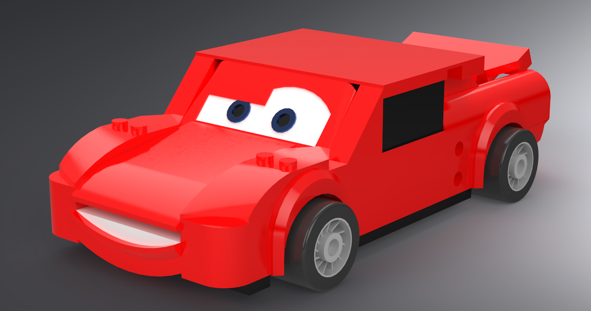
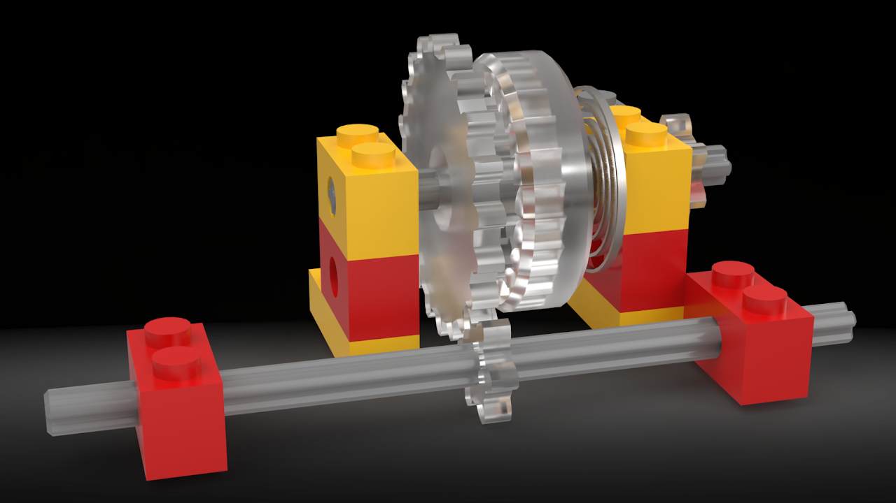
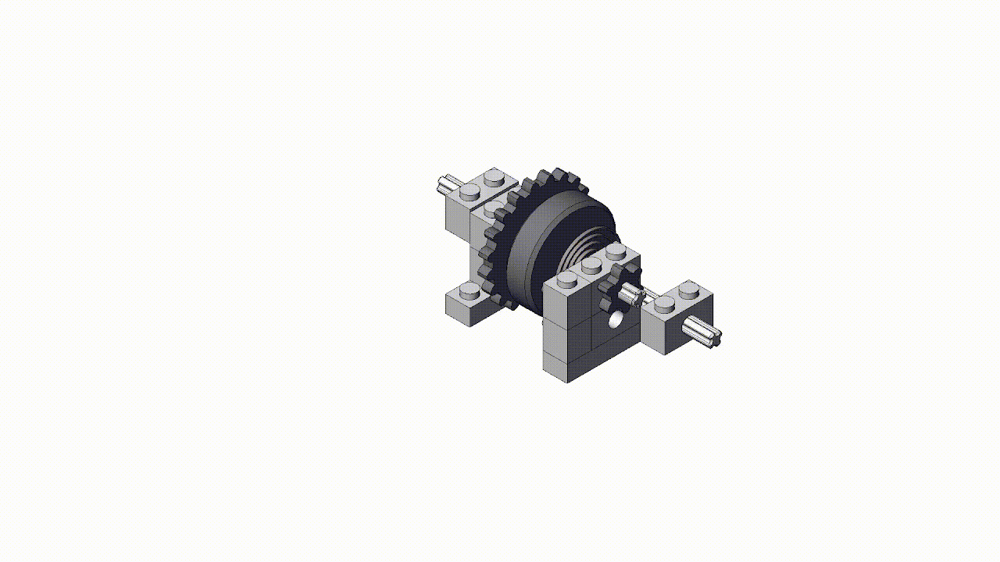

This was a group project in ENME272, so I will only cover a few of my parts/assemblies. It is an assembly of a LEGO Lightning McQueen from the franchise "Cars".
Below are two renders I did of the final product using Solidworks Visualize.



Above is a render I did for the subassembly I designed, a ratcheting wind-up powertrain that you would find in a toy car like this one. This rendering was also done in Solidworks Visualize.

Below is a slideshow of the parts in my subassembly and technical drawings for each part.
Lastly, here is the animation I created for the car driving along a tabletop. It was created in Solidworks Motion Analysis.